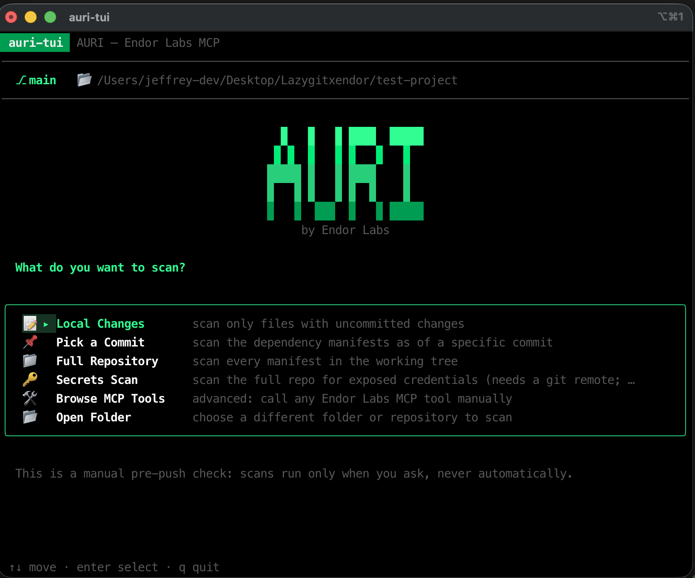
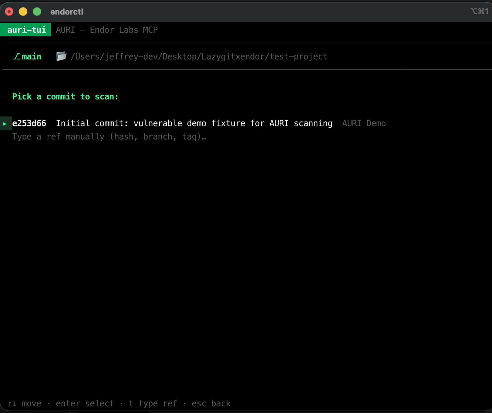
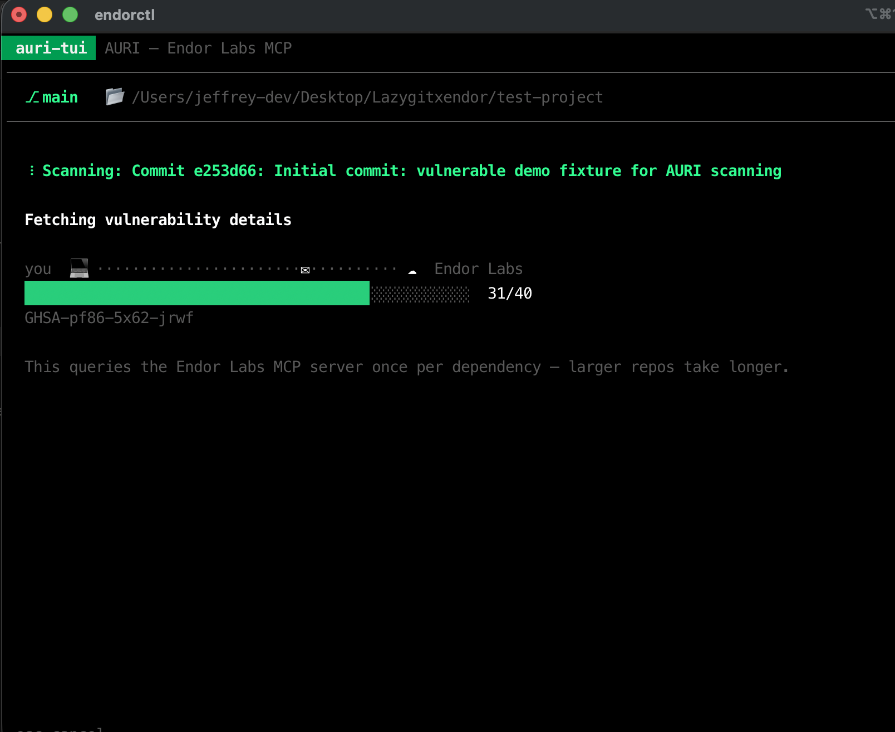
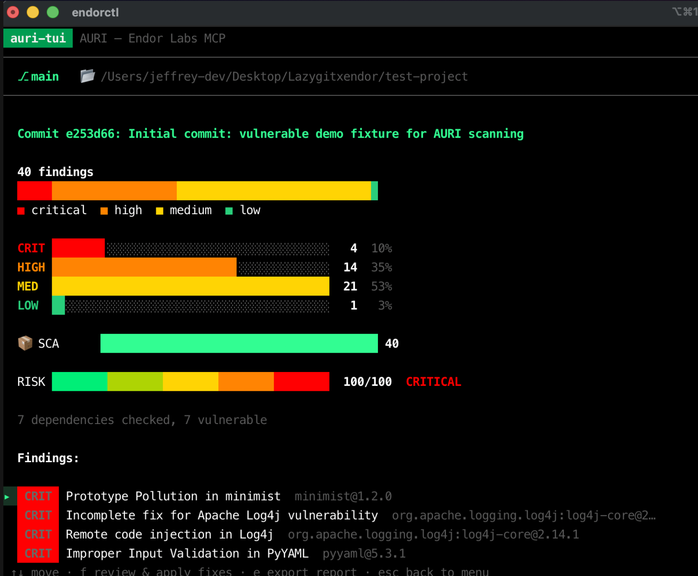
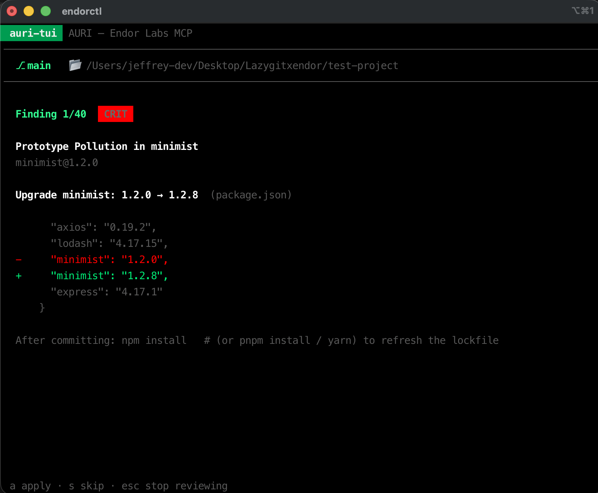
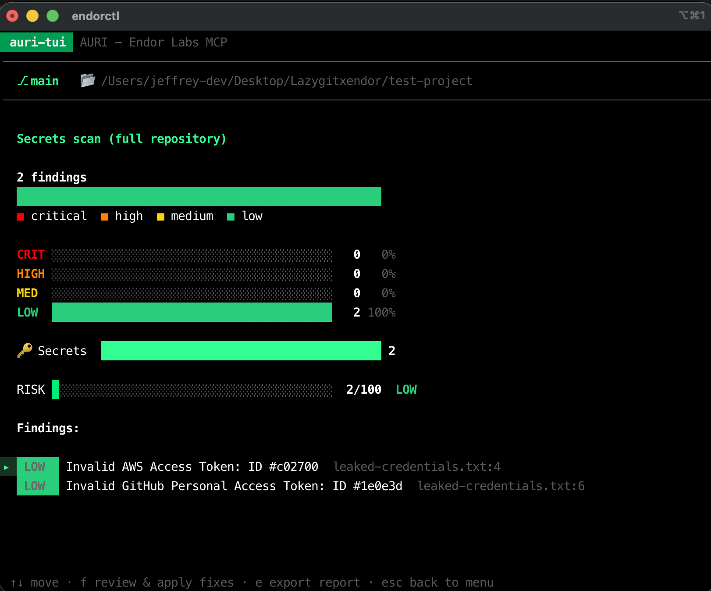

Cuando eres una persona interesada en la ciberseguridad, muchas veces terminas pensando que todo se reduce a ser un atacante o un defensor. Existe ese concepto de que la ciberseguridad se basa únicamente en alguien que ataca y alguien que defiende, y en la mayoría de los casos creo que es así. Pero conforme aprendes, lees e investigas, te das cuenta de que en realidad la ciberseguridad es algo bastante amplio: hay de todo tipo y para todos los casos. Una muestra de ello son las posiciones que se están abriendo sobre Seguridad de IA, Seguridad de Prompts, etc.
Estas últimas semanas he estado leyendo mucho sobre el concepto de AppSec. Como mencioné en otro post, me interesé mucho en el producto de una empresa llamada Endor Labs, que ofrece soluciones para desarrolladores: básicamente, lo que hace su producto es analizar tu código, contenedores y pipeline de CI/CD para encontrar vulnerabilidades, que en muchos casos están presentes por la nueva tendencia de apoyarse en herramientas de desarrollo con IA.
Dicho esto, me quedé pensando que la programación tradicional se queda un poco olvidada en toda esta conversación. ¿Qué pasa si no me estoy apoyando en la IA y simplemente quiero revisar mi código? Tal vez eres alguien de la vieja escuela y quieres revisar tus dependencias y escanear tu repo local para encontrar secretos expuestos y vulnerabilidades — ¿por qué no?
Me propuse un ejercicio: ¿qué tal si pudiera hablar con el MCP de Endor Labs (que es gratis en su versión Developer) desde mi terminal, y pudiera revisar mis commits sin necesidad de ordenárselo a una IA? Sé que no es el caso más común en estos tiempos, pero sirve muy bien como ejercicio y para entender mejor sus casos de uso, en especial con herramientas como los MCP.
Sé que los MCP son algo que va de la mano con los clientes de IA — al final fueron inventados para potenciar los modelos y darles más posibilidades para generar o hacer todo tipo de cosas. Pero al final, el MCP simplemente es una manera de comunicar diferentes aplicaciones entre sí, así que, ¿por qué no podríamos invocar uno desde la terminal en vez de hacerlo desde un prompt en Claude o Cursor?
El problema
Tiendo a escribir scripts pequeños para resolver distintos tipos de tareas, desde automatizaciones hasta funciones Lambda que reciben y analizan datos de alertas en AWS. No siempre utilizo una IA para hacerlo: a veces me gusta hacerlo directamente desde el editor de código, leyendo un poco de internet — vamos, a la antigua. Soy de esas personas que aprende haciendo, y no quiero dejar que la IA me vuelva "perezoso", por así decirlo, en lo que me apasiona: aprender más sobre tecnología.
Estos repos, que tengo repartidos en carpetas por toda mi computadora, generalmente los subo a GitHub y los dejo ahí para seguir con su desarrollo, pero casi nunca les hago ningún tipo de escaneo. Es algo que había estado obviando por mucho tiempo, pero al descubrir herramientas como las de Endor me pareció algo muy valioso: en ciberseguridad no se escatiman medidas a la hora de no dejarle puertas abiertas a cualquiera que quiera atacar una organización.
Ya que no manejo algunos de estos repos con IA, tendría que conformarme con los métodos tradicionales de escaneo — distintas herramientas con las que ya cuenta npm, por ejemplo. Pero yo quería algo más centralizado: algo que pudiera invocar, que buscara los fallos, los remediara y, ¿por qué no?, me los reportara, para poder echarle un vistazo a la salud de distintos repos pequeños.
La solución
Después de meditarlo un poco, llegué a la conclusión de que los MCP, al final, son herramientas de comunicación: puedo hablar con ellas desde la terminal usando stdio para enviar datos y recibir respuestas de cualquier MCP, mientras esté correctamente autenticado. Así que pensé: ¿por qué no desarrollar una pequeña app que haga esto por mí? Y eso fue lo que hice — creé una pequeña aplicación de terminal, con una pequeña UI, que usa el MCP de Endor y escanea mis commits o repos completos sin necesidad de un cliente de IA de por medio.
Quiero decir, no hay necesidad de complicarse la vida con esto: al final podría decirle a Claude que revisara la carpeta, se conectara al MCP de Endor, analizara el repo o los commits, y me diera una respuesta en lenguaje natural. Esa es, al final, la gracia de combinar MCP con IA: las respuestas del MCP se pueden procesar con el sistema de NLP del modelo y convertirse en respuestas ya analizadas. Pero eso le quitaría la gracia a poder aprender, y quiero creer que, para alguien más, esto también podría ser útil en algún momento.
¿Cómo funciona?
La app se llama auri-tui, y es básicamente una interfaz de terminal (TUI) escrita en Go, usando Bubble Tea para el manejo de estado y Lip Gloss para el estilo visual. No tiene ningún cliente HTTP propio ni maneja credenciales: toda la autenticación y la comunicación con Endor Labs quedan completamente delegadas a endorctl, el CLI oficial de Endor.
El flujo es simple:
auri-tuiarrancaendorctl ai-tools mcp-servercomo un proceso hijo (víanpx -y endorctl ai-tools mcp-server) y abre con él un canal JSON-RPC 2.0 sobre stdin/stdout — ahí es donde vive el protocolo MCP, nada de HTTP ni sockets.- Te muestra un menú para elegir qué escanear: tus cambios locales, un commit específico, el repo completo, un escaneo de secretos, o incluso un modo "avanzado" para invocar cualquier tool del MCP a mano.
- Según lo que elijas, descubre los manifiestos de dependencias (
package.json,go.mod,requirements.txt,pom.xml...) y le pregunta a Endor, dependencia por dependencia, si tiene vulnerabilidades conocidas — o, si elegiste el escaneo de secretos, hace una sola llamada que corre el escáner de secretos de Endor sobre todo el repositorio. - Pinta los resultados como gráficos de barras y un medidor de riesgo hechos con caracteres de bloque de Unicode — nada de librerías de gráficos, solo texto con color.
- Te deja revisar cada hallazgo uno por uno, y si hay una actualización de versión conocida para arreglarlo, te muestra el diff exacto que se aplicaría al manifiesto. Nada se escribe en disco sin que tú lo confirmes explícitamente.

También se integra directamente con Lazygit: con un solo Ctrl+A dentro de lazygit, se abre auri-tui en pantalla completa, y al salir vuelves exactamente a donde estabas. La idea es que quede a una tecla de distancia del flujo de trabajo normal con git, sin tener que acordarte de correr nada por separado.
Ejemplo con un repo de demostración
Para probarlo de verdad armé un repo chiquito e intencionalmente vulnerable — nada que vaya a producción, solo versiones viejas y conocidas de paquetes con CVEs documentados: axios@0.19.2, lodash@4.17.15, minimist@1.2.0, log4j-core@2.14.1 (sí, el de Log4Shell) y un par de dependencias de Python con vulnerabilidades conocidas. Le agregué también un archivo con credenciales falsas de AWS y GitHub para poder probar el escaneo de secretos.
Lo primero que hace la app es dejarte elegir qué commit escanear:

Mientras escanea, cada dependencia se consulta contra el MCP de Endor una por una — por eso hay una pequeña animación de un sobre viajando entre "tú" y "Endor Labs", para dejar claro que hay una conversación real pasando en segundo plano:

Y el resultado: 40 hallazgos, 4 de ellos críticos (incluyendo Log4Shell), con un medidor de riesgo que no se anda con rodeos: 100/100.

Desde ahí puedo entrar a revisar cada hallazgo uno por uno. Por ejemplo, para minimist me muestra el diff exacto que aplicaría — la versión vulnerable tachada en rojo, la corregida en verde — y espera a que yo presione a para aplicarlo o s para saltarlo. Nada se toca sin confirmación explícita:

Y por último, el escaneo de secretos — que corre el escáner real de Endor sobre todo el repo — encontró las dos credenciales falsas que dejé a propósito. Lo interesante es que Endor no solo las detecta por patrón: las valida en vivo contra el servicio real, y en este caso me confirma que ambas ya están inactivas:

Toda esta información también se puede exportar como un reporte en Markdown con solo presionar e, listo para pegar en un issue o guardar como evidencia.
Features de la app
- Dos motores de escaneo: uno para dependencias/malware (consulta a Endor por cada dependencia única que encuentra) y otro para secretos (una sola llamada que corre el escáner completo de Endor sobre el repo).
- Múltiples objetivos de escaneo: solo tus cambios locales sin commitear, un commit específico (vía un worktree temporal, sin tocar tu árbol de trabajo real), el repositorio completo, o un navegador manual para invocar cualquier tool del MCP.
- Resultados en gráficos de terminal: barras de severidad, desglose por categoría y un medidor de riesgo de 0 a 100 — todo hecho con caracteres Unicode, sin dependencias externas de gráficos.
- Revisión y aplicación de fixes con confirmación manual: cada hallazgo se revisa uno por uno, con diff incluido, y nada se escribe en disco sin que el usuario presione explícitamente la tecla para aplicar.
- Exportación a Markdown: un reporte completo con el resumen, el puntaje de riesgo y cada hallazgo agrupado por severidad, listo para compartir.
- Integración con Lazygit: un solo atajo de teclado (
Ctrl+A) para abrir todo el flujo sin salir de tu herramienta de git. - Selector de carpetas integrado: se puede apuntar a cualquier repositorio sin tener que relanzar la app desde esa carpeta.
- 100% gratis: solo usa herramientas del MCP de Endor Labs disponibles en su tier gratuito (Developer Edition) — no requiere licencia de
endorctl scanni del CLI Enterprise. - Instaladores para Mac, Linux y Windows: compilan el binario desde el código fuente en tu propia máquina (sin binarios prefirmados ni advertencias de Gatekeeper) y configuran automáticamente el atajo en Lazygit si lo detectan instalado.
Si quieres probarlo, el repo es público: github.com/JeffreyCq/auri-tui, con instaladores de un solo comando para Mac, Linux y Windows.
Conclusiones
Fue extremadamente divertido aprender más sobre los MCP y su forma de comunicarse, y también sobre cómo este tipo de soluciones se pueden usar como una especie de alternativa a las APIs tradicionales. Convierten herramientas del día a día en sistemas bastante poderosos que, con un poco de imaginación y un pipeline tanto para desarrollo como para cualquier otra actividad, pueden hacer que nuestras automatizaciones se sientan profesionales y a la vanguardia de todos los cambios que están sucediendo en esta era de la IA.
Soy fiel creyente de que, para usar una herramienta, siempre vale la pena entender cómo funciona. Me encanta poder terminar este pequeño proyecto y poder decir que sé cómo funciona un MCP, y no solo conocer el nombre y para qué sirve. Al final del día, el conocimiento de verdad abre muchas puertas en tu mente, y esa satisfacción de conocer y entender algo nunca podrá ser superada por una respuesta generada por una IA.